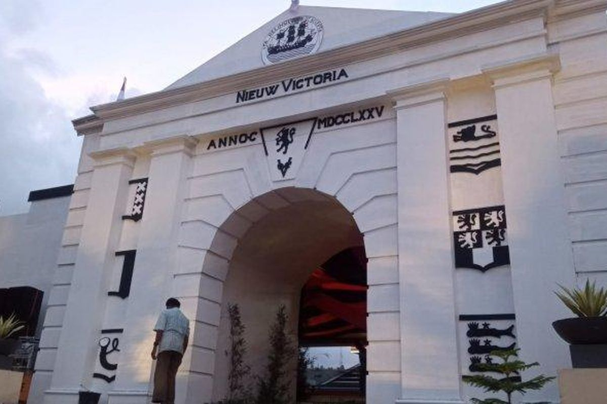

(Nieuw Victoria)
Benteng Victoria adalah saksi bisu tiga era kolonial: Portugis, Belanda, dan Jepang. Bangunan aslinya, yang dikenal sebagai Nossa Senhora da Anunciada, mengalami renovasi besar-besaran oleh Belanda dan diberi nama Nieuw Victoria. Saat ini, benteng ini berfungsi sebagai Markas Komando Militer setempat dan menyimpan berbagai meriam kuno serta koleksi benda bersejarah yang menceritakan perlawanan rakyat Maluku terhadap penjajahan.